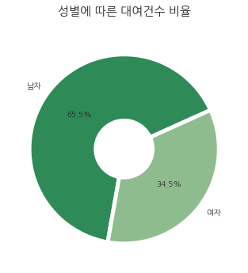

Seoul Bike - sub-analysis
region
sub-analysis
서울 각 구의 따릉이 상세정보를 볼 수 있습니다
SUB-ANALYSIS
이동거리
이용시간
성별 / 연령별 이용률
성별 / 연령별 이용률
(1) 성별에 따른 대여건수 비율을
시각자료로 확인할 수 있습니다

성별 / 연령별 이용률
(2) 연령대에 따른 대여건수 비율을
시각자료로 확인할 수 있습니다